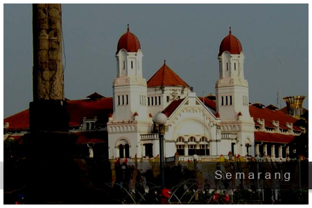

Paket Wisata Dieng dari Semarang – Roadtrip Nyaman ke Negeri di Atas Awan
Mulai perjalanan ke Dieng dengan lebih simpel langsung dari Semarang. Seluruh perjalanan diatur khusus agar kamu bisa menikmati suasana pegunungan dan berbagai destinasi unggulan tanpa harus repot ganti transportasi. Penjemputan tersedia dari alamat pribadi, hotel, stasiun, atau bandara di area Semarang, sehingga kamu bisa berangkat dengan tenang dan lebih santai.
Paket ini ideal untuk pasangan, keluarga kecil, atau grup yang ingin suasana liburan berbeda dari biasanya. Kamu bisa memilih durasi satu hari penuh, dua hari satu malam, atau bahkan tiga hari dua malam untuk pengalaman yang lebih lengkap. Semua layanan sudah include transportasi privat, penginapan sesuai kebutuhan, konsumsi, tiket wisata, dan pemandu lokal yang paham spot-spot terbaik di Dieng.
Rute perjalanan bisa disusun fleksibel. Tim akan menyesuaikan dengan request destinasi favorit atau menyarankan itinerary terbaik sesuai musim dan kondisi lapangan. Dengan waktu yang cukup, kamu bisa menikmati sunrise, kuliner lokal, wisata heritage, hingga jelajah alam terbuka bersama orang terdekat.
Pilihan Paket & Waktu
- Paket 1 Hari: Solusi efisien untuk wisata cepat pulang-pergi dari Semarang. Semua destinasi utama sudah dirancang satu jalur, waktu lebih hemat.
- Paket 2 Hari 1 Malam: Waktu lebih longgar untuk menikmati malam di Dieng, pengalaman sunrise, serta agenda wisata tambahan.
- Paket 3 Hari 2 Malam: Itinerary bebas diatur, cocok untuk yang ingin benar-benar santai, lebih banyak pilihan destinasi, dan waktu istirahat yang cukup.
Fasilitas
- Mobil pariwisata atau Pribadi (private untuk peserta dari Semarang)
- Penjemputan dan pengantaran area Semarang (rumah, hotel, bandara, stasiun)
- Driver lokal berpengalaman dan tour leader Dieng
- Akomodasi privat (pilihan homestay atau hotel di kawasan Dieng)
- Layanan makan lengkap (pagi, siang, malam, snack/cemilan lokal)
- Tiket masuk seluruh objek wisata sesuai itinerary
- Air mineral harian
- Parkir, tol, dan retribusi wisata (semua sudah include)
- Dokumentasi foto basic di beberapa destinasi utama
Rangkaian Destinasi Pilihan
- Bukit Sikunir (sunrise view)
- Telaga Cebong
- Kawah Sikidang
- Komplek Candi Arjuna
- Batu Ratapan Angin
- Dieng Plateau Theater
- Taman Pintu Langit
- Pemandian Air Panas Dieng
- Kahyangan Skyline
- Dieng Park
- Air Terjun Sikarim
- Telaga Menjer
- Bukit Scooter (sore/sunset)
- Perkebunan Teh
- Sentra Oleh-oleh & Kuliner
Kamu juga bisa request destinasi tambahan sesuai keinginan atau menyesuaikan waktu liburan yang tersedia.
Info Perjalanan dari Semarang
Perjalanan dari Semarang menuju Dieng umumnya ditempuh sekitar 4-5 jam via rute utama Wonosobo. Waktu keberangkatan dan titik jemput fleksibel, tinggal atur sesuai jadwal kamu. Semua itinerary dibuat agar perjalanan tetap nyaman, tidak terburu-buru, dan bisa menikmati tiap momen tanpa repot pindah kendaraan.
Cuaca di Dieng cukup sejuk, jadi disarankan membawa jaket, pakaian hangat, dan outfit nyaman. Untuk permintaan khusus terkait makanan, penginapan, atau sesi foto privat, bisa dikonsultasikan langsung ke tim sebelum keberangkatan.
FAQ Paket Dieng dari Semarang
Bisa request penjemputan di area tertentu Semarang?
Bisa, semua area kota Semarang, stasiun, hotel, hingga bandara Ahmad Yani bisa dipilih sebagai meeting point.
Destinasi bisa request atau harus ikut itinerary?
Bebas, itinerary bisa diatur sesuai keinginan atau mengikuti rute rekomendasi dari tim.
Paket ini cocok untuk siapa saja?
Paket tersedia untuk dua orang, keluarga, sahabat, maupun grup kecil, dengan kendaraan privat tanpa digabung dengan peserta lain.
Termasuk makan dan tiket wisata?
Sudah termasuk makan lengkap selama trip, tiket masuk objek wisata, serta fasilitas utama lainnya.
Bisa tambah hari atau upgrade fasilitas?
Bisa, semua bisa dikustom sesuai kebutuhan. Silakan konsultasikan ke tim reservasi untuk opsi lebih lengkap.